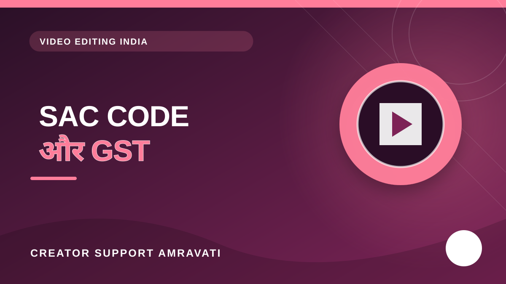

People often search for a “video editing services HSN code” when preparing a quotation or GST invoice. The important distinction is that HSN is used for goods, while services are generally classified using a Service Accounting Code (SAC). For audiovisual editing and post-production, the classification list includes SAC 999613.
Is video editing an HSN code or SAC code?
Video editing is a service, not a physical product. Therefore, the relevant classification is generally a SAC (Service Accounting Code), rather than an HSN code for goods. This guide uses the common search phrase while explaining the correct terminology.
What does SAC 999613 cover?
The official Scheme of Classification of Services lists 999613 as “Audiovisual post-production services”. Its scope includes editing, colour correction, digital restoration, visual effects, animation, format conversion, compression and digital encoding, captioning, titling, subtitling, and sound editing or design. The exact code for an invoice depends on the actual work supplied and applicable classification notes.
Production and post-production are not always the same
If a business only edits footage supplied by a client, the work is typically described as post-production. If the engagement includes filming or producing a motion picture, television or video programme, a different service description may apply. The official classification separately lists 999612 for motion picture, videotape, television and radio programme production services.
What should an editing invoice mention?
A clear invoice can describe the deliverable in plain language—for example, “video editing and audiovisual post-production for one promotional video”—along with service period, quantity, taxable value and tax details required by law. Keep the quotation, approved scope and delivery record so the description matches the work performed.
Does SAC 999613 automatically decide the GST rate?
No. Do not rely on a code alone or copy a rate from an unrelated blog. GST treatment can depend on the precise service, rate notifications, exemptions, place-of-supply rules, registration status and facts of the transaction. Ask a qualified GST practitioner or chartered accountant to confirm classification and rate for your invoice.
Official references
The Government’s Scheme of Classification of Services identifies SAC 999613 as audiovisual post-production services. Read the source documents and confirm the current legal position with your tax adviser. Official references: GST Council – Scheme of Classification of Services and MCA – National Product Classification for Services.
Frequently asked questions
What is the SAC code for video editing?
SAC 999613 is listed for audiovisual post-production services, including audiovisual editing. Confirm that the actual work fits this description.
Can I write HSN 999613 on my invoice?
For a service, refer to it as SAC rather than HSN. Confirm invoice format with your GST professional.
Is the GST rate always 18%?
Do not assume this without checking current rate notifications and the exact service. Ask a qualified GST professional.
Topic tags
· · · ·
Suggested social hashtags
#videoeditingserviceshsncode #videoeditingsaccode #sac999613 #gstinvoicevideoediting #audiovisualpostproduction
Need help with your next video?
Need a video editing quotation or project scope? Contact CSA. For tax classification and GST rate, consult your CA or GST practitioner.
← Back to all articles · Video editing service · Contact CSA